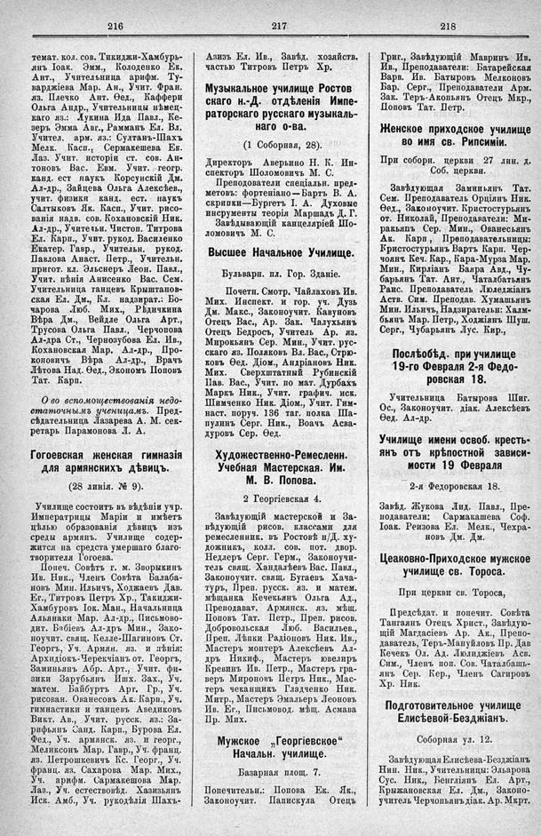

Лист источника 578
Скан

Распознанный текст
216
темат. кол. сов. Тикиджи-Хамбурь-
янъ Іоак. Эмм., Колоденко Ек.
Ант., Учительница арифм. Ту-
варджіева Мар. Ан., Учит. Фран.
яз. Плечко Ант. Ѳед., Каффери
Ольга Андр., Учительницы нѣмец-
каго яз.: Лукина Ида Павл., Ке-
зеръ Эмма Авг., Рамманъ Ел. Вл.
Учител. арм. яз.: Султанъ-Шахъ
Мелк. Касп., Сермакешева Ел.
Лаз. Учит. исторіи ст. сов. Ан-
тоновъ Вас. Евм. Учит. геогр.
канд. ест наукъ Корсунскій Дм.
Ал-др., Зайцева Ольга Алексѣев.,
учит. физики канд. ест. наукъ
Салтыковъ Як. Касп., Учит. рисо-
ванія надв. сов. Кохановскій Ник.
Ал-др., Учительн. Чистоп. Титрова
Ел. Карп., Учит. рукод. Василенко
Екатер. Гавр., Учительн. рукод.
Павлова Анаст. Петр., Учительн.
пригот. кл. Эльснеръ Леон. Павл.,
Учит. пѣнія Анисенко Вас. Сем.
Учительница танцевъ Крыштанов-
ская Ел. Дм., Кл. надзират.: Бо-
чарова Люб. Мих., Рѣдичкина
Вѣра Дм., Вейдле Ольга Арт.,
Трусова Ольга Павл., Черчопова
Ал-дра Ст., Чернозубова Ел. Ив.,
Кохановская Мар. Ал-др., Про-
коповичъ Вѣра Ал-др., Врачъ
Лѣтова Над. Ѳед., Экономъ Поповъ
Тат. Карп.
О-во вспомоществованія недо-
статочнымъ ученицамъ. Пред-
сѣдательница Лазарева А. М. сек-
ретарь Парамонова Л. А.
Гогоевская женская гимназія
для армянскихъ дѣвицъ.
(28 линія, № 9).
Училище состоитъ въ вѣдѣніи учр.
Императрицы Маріи и имѣетъ
цѣлью образованія дѣвицъ изъ
среды армянъ. Училище содер-
жится на средста умершаго благо-
творителя Гогоева.
Попеч. Совѣтъ г. м. Зворыкинъ
Ив. Ник., Членъ Совѣта Балаба-
новъ Мин. Ильичъ, Ходжаевъ Дав.
Ег., Титровъ Петръ Хр., Такиджи-
Хамбуровъ Іок. Ман., Начальница
Альянаки Мар. Ал-др., Письмово-
дит. Бэбіевъ Ал-дръ Мин., Зако-
ноучит. свящ. Келле-Шагиновъ Ст.
Георгъ, Уч. Армян. яз. и лѣнія:
Архидіокъ-Черекчіанъ от. Георгъ,
Заминьянъ Абр. Арт., Учит. фи-
зики Зарубьянъ Ишх. Зах., Уч.
матем. Байбуртъ Арт. Гр., Уч.
рисован. Ованесовъ Ак. Карп., Уч.
гимнастики и танцевъ Аведиковъ
Викт. Ав., Учит. русск. яз.: За-
рифьянъ Санд. Карп., Бурова Ел.
Фед., Уч. армянск. яз. и геогр.,
Меликсонъ Мар. Гавр., Уч. франц.
яз. Петрошкевичъ Кс. Георг., Уч.
франц. яз. Сахарова Мар. Мих.,
Уч. арифм. Сармакешова Мар.
Лаз., Уч. естествовѣд. Хазизьянъ
Иск. Амб., Уч. рукодѣлія Шахъ-
217
Азизъ Ел. Ив., Завѣд. хозяйств.
частью Титровъ Петръ Хр.
Музыкальное училище Ростов
скаго н.-Д. отдѣленія Импе-
раторскаго русскаго музыкаль-
наго о-ва.
(1 Соборная, 28).
Директоръ Аверьино Н. К. Ин-
спекторъ Шоломовичъ М. С.
Преподаватели спеціальн. пред-
метовъ: фортепіано — Бартъ В. А.
скрипки — Бургетъ І. А. Духовые
инсрументы теорія Маршадъ Д. Г.
Завѣдывающій канцеляріей Шо-
ломовичъ М. С.
Высшее Начальное Училище.
Бульварн. пл. Гор. Зданіе.
Почетн. Смотр. Чайлаховъ Ив.
Мих. Инспект. и гор. уч. Дузь
Дм. Макс., Законоучит. Кавуновъ
Отецъ Вас., Ар. Зак. Чалухьянъ
Отецъ Бедросъ, Учитель Ар. яз.
Мирокьянъ Сер. Мин., Учит. рус-
скаго яз. Поляковъ Вл. Вас., Стрю-
ковъ Ѳед. Діом., Андріановъ Ник.
Мих. Сверхштатный Рубинскій
Пав. Вас., Учит. по мат. Дурбахъ
Маркъ Ник., Учит. графич. иск.
Шимченко Ник. Діом., Учит. Гим-
наст. поруч. 136 таг. полка Ша-
пулинъ Серг. Ник., Воачъ Асва-
дуровъ Сер. Ѳед.
Художественно-Ремесленн.
Учебная Мастерская. Им.
М. В. Попова.
2 Георгіевская 4.
Завѣдующій мастерской и За-
вѣдующій рисов. классами для
ремесленник. въ Ростовѣ н/Д. ху-
дожникъ, колл. сов. пот. двор.
Недлеръ Серг. Герм., Законоучи-
тель свящ. Хандалѣевъ Вас. Павл.,
Законоучит. свящ. Бугаевъ Хача-
туръ, Преп. русск. яз. и матем.
мѣщанка Кечекьянъ Ольга Ад.,
Преподават. Армянск. яз. мѣщ.
Поповъ Тат. Петр., Преп. рисов.
Добровольская Люб. Васильев.,
Преп. Лѣпки Радіоновъ Ник. Ив.,
Мастеръ монтеръ Алексѣевъ Ал-
дръ Никиф., Мастеръ ювелиръ
Кревинъ Ив. Петр., Мастеръ гра-
веръ Мироновъ Петръ Ник., Мас-
теръ чеканщикъ Гладченко Ник.
Митр., Мастеръ Эмальеръ Леоновъ
Ив. Ег., Письмовод. мѣщ. Асмава
Пр. Мих.
Мужское „Георгіевское“
Начальн. училище.
Базарная площ. 7.
Попечительн.: Попова Ек. Як.,
Законоучит. Папискула Отецъ
218
Григ., Завѣдующій Мавринъ Ив.
Ив., Преподаватели: Батарейская
Варв. Ив. Батыровъ Мелконовъ
Бар. Серг., Преподаватели Арм.
Зак. Теръ-Акопьянъ Отецъ Мкр.,
Поповъ Тат. Петр.
Женское приходское училище
во имя св. Рипсиміи.
При соборн. церкви 27 лин. д.
Соб. церкви.
Завѣдующая Заминьянъ Тат.
Сем. Преподаватель Орціянъ Ник.
Ѳед., Законоучит. Кристостурьянъ
от. Николай, Преподаватели: Ми-
ракьянъ Сер. Мин., Ованесьянъ
Ак. Карп, Преподавательницы:
Кристостурьянъ Вартъ Карп. Чер-
чоянъ Кеч. Кар., Кара-Мурза Мар.
Мин., Кирліанъ Баяра Авд., Чу-
барьянъ Тат. Ант., Чаталбатьянъ
Раис. Преподаватель Люледжіанъ
Аств. Сим. Преподав. Хумашьянъ
Мин. Ильичъ, Надзирательн: Халм-
бьянъ Мар. Петр., Ходжіянъ Шуш.
Серг., Чубарьянъ Лус. Кир.,
Послѣобѣд. при училище
19-го Февраля 2-я Федо-
ровская 18.
Учительница Батырова Шиг.
Ос., Законоучит. діак. Алексѣевъ
Ѳед. Ал-др.
Училище имени освоб. кресть-
янъ отъ крѣпостной зависи-
мости 19 Февраля
2-я Федоровская 18.
Завѣд. Жукова Лид. Павл., Пре-
подаватели: Сармакашева Соф.
Іоак. Реизова Ел. Мелк., Чехра-
новъ Дм. Дм.
Цеаковно-Приходское мужское
училище св. Тороса.
При церкви св. Тороса,
Предсѣдат. и попечит. Совѣта
Тангаянъ Отецъ Христ., Завѣдую-
щій Магдасіевъ Ар. Ак., Препо-
даватель, Теръ-Мануйловъ Пр. Дав
Кечекъ Ол. Ад. Люлиджіевъ Асв.
Сим., Членъ поп. Сов. Чаталбашь-
янъ Сер. Кер., Членъ Сагировъ
Хр. Ник.
Подготовительное училище
Елисѣевой-Безджіанъ.
Соборная ул. 12.
Завѣдующая Елисѣева-Безджіанъ
Нин. Ник., Учительницы: Эльярова
Сус. Ник., Бенгліянъ Ел. Арт.,
Крыжановская Ел. Дм., Законо-
учитель Черчопьянъ діак. Ар. Мкрт.